星系的形成与宇宙早期的密度扰动演化有密切关系。目前流行的看法是，在宇宙大爆炸的过程中，极早期就产生了原初物质密度涨落。这些原初密度涨落由于引力不稳定性而不断加强，从而使原来弥散的星系介质(原始星云)凝聚、收缩而成为原星系，再进一步演化为星系。关于宇宙早期密度扰动的演化我们将在下一章中再仔细讨论。这里只简要介绍一下有关星系形态演化的一些主要看法。
20 世纪二三十年代时曾认为，星系的形态序列即哈勃序列就是演化序列。当时有两种不同的看法，一种看法认为，原来球对称的原星系通过自转而逐渐变扁，再形成旋臂，然后旋臂慢慢变松并消失，也就是先形成椭圆星系，再变为旋涡星系，最后演化为不规则星系。另一种看法则认为，原星系形成时是形态不规则的，后来由于转动而获得轴对称性以及旋臂结构，变成旋涡星系，但最终旋臂消失而成为椭圆星系。现在我们知道，星系的形态序列并不是演化序列，因为旋涡星系、椭圆星系都具有老年星，而且年龄差不多。同时，质量、角动量等这些量的差别也表明，除非星系之间发生碰撞和并合，不同星系类型之间一般是不会彼此转化的。
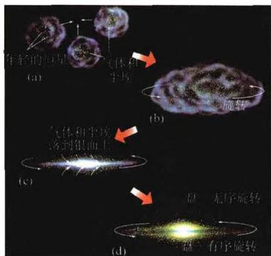
图 6.41a 旋涡星系形成的图解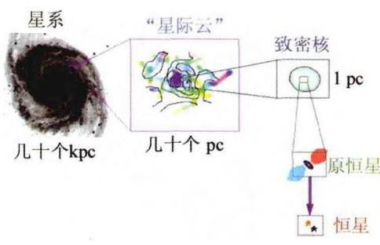
图 6.41b 旋涡星系中恒星的形成目前较为公认的看法是，原始星云在收缩过程中，出现第一代恒星。在原星系的中心区，收缩快、密度高，恒星形成率也高。由于中心区的剧烈弛豫过程，形成旋涡星系的星系核或椭圆星系的整体。如果星系有整体自转，则离心力将阻止赤道面（银道面）上的进一步收缩，并造成不同的扁度。气体的随机运动和恒星的辐射加热过程使得部分气体未成为星胚，并由碰撞作用而沉向赤道面，最终形成旋涡星系（见图6.41）。旋涡星系的第一代恒星诞生率较低，所以有部分气体保留了下来。计算表明，不同的初始密度和初始速度的弥散度，可以形成核球和星系盘之间大小比例不同的星系，这就可以大致解释Sa、Sb、Sc三种次型。椭圆星系由于原始星云密度大，速度弥散度也较大，恒星形成率一开始就非常高，气体几乎全部用来形成恒星。而不规则星系的恒星诞生率比旋涡星系还低，故至今有更多气体遗留下来。观测发现，在规则星系团中，物质密度、速度弥散都大，成员中椭圆星系多。而不规则星系团中，密度较小，椭圆星系较少。在富星系团中，成员以椭圆星系为主，旋涡星系很少，其中心区域则完全观测不到旋涡星系。旋涡星系主要是场星系（即非成团的孤立星系）或是疏散星系群的成员，这反映出那里的密度和速度弥散
度都比较低。
对于单个星系来说，星系形态从形成之初就基本定型，除非因邻近的伴星系的潮汐作用等因素，造成物质“桥”、“尾”或剥去星系外围物质，或是星系之间的直接碰撞，星系结构一般无大变化。
长期以来人们一直认为，星系的演化以单个星系为主，星系之间的相互作用不是很重要。但近十几年来，许多观测事实的发现已使这种看法发生了根本性的改变。例如综合口径射电望远镜阵(VLA)发现，大约 50\% 的旋涡星系(包括银河系在内)的星系盘有翘曲现象，这表明它们与邻近星系之间有引力(潮汐力)相互作用。此外，超过一半的椭圆星系包含有不只一个分立的恒星壳层，还有些星系甚至显示核心处有两个大质量黑洞存在(如图6.42)，这些显然都是星系并合的迹象。哈勃空间望远镜更是直接拍摄到一批星系碰撞或并合的图片(见图6.43)，此外还有三个星系的碰撞甚至星系团之间的碰撞(见图6.44)。
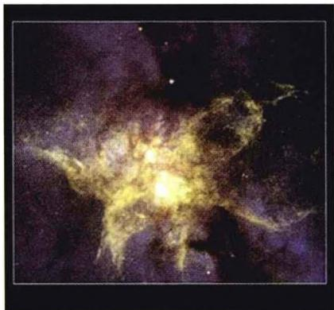
图6.42a 哈勃望远镜在光学波段 拍摄的“蝴蝶状”星系NGC6240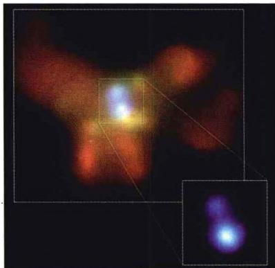
图6.42b 钱德拉X射线空间天文台拍摄的同一星系照片，显示其核心区域可能存在两个黑洞按照现在的看法, 宇宙结构的形成过程是所谓“自下而上”(bottom-up)的模式(见下一章), 即先形成较小尺度的结构, 然后通过它们之间的聚集及并合, 而逐渐形成尺度越来越大的结构(亦称为等级式成团模式)。显然在这样的模式下, 不仅星系团的形成一般要晚于星系的形成, 而且星系本身的形成也可能经历一个并合阶段, 例如大的星系可能就是由较小的星系碰撞、并合而成的。我们知道, 星系之间的潮汐力作用会使双方的自转变慢，就像地球与月球的潮汐力使两者的自转都慢下来一样。星系自转变慢就会显著改变旋涡星系的结构，而两个星系最后由于引力而走到一起，更会使双方的恒星、气体物质相互交融，这样最终合并而成一个大的椭圆星系。图6.45就显示了这样一个计算机数值模拟的结果，两个旋涡星系经历大约18亿年的时间，最终并合而成为一个椭圆星系。目前认为，像这样的过程在实际的宇宙中并不是罕见的，大质量的椭圆星系很可能都是由较小的旋涡星系并合而成。
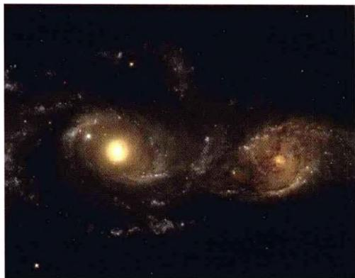
(a) NGC2163 和 NGC2207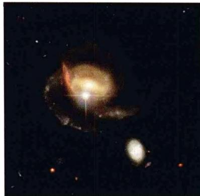
(b) NGC3370 与其矮伴星系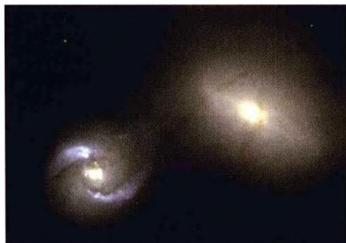
(c) NGC1410 与 NGC1409, 图中两星系间物质交流的漏斗形“管道”清晰可见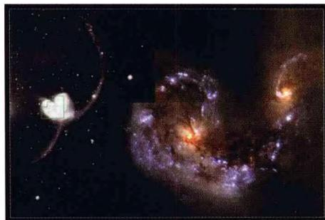
(d) 天线星系: NGC4038 和 NGC4039, 两个星系的碰撞产生大量星暴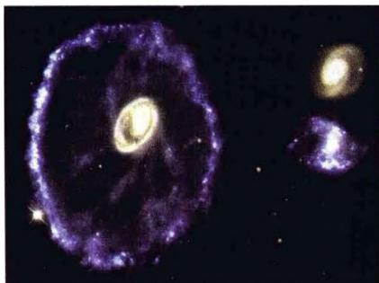
(e) “车轮”星系（A0035-335）与“入侵者”。但目前还不清楚右边的两个小星系谁是“入侵者” 图6.43 哈勃望远镜拍到的星系碰撞图片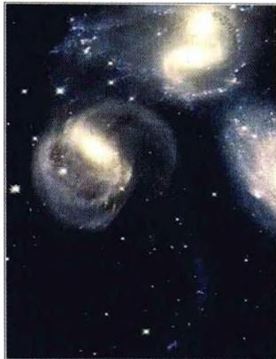
图6.44a 三个星 系的碰撞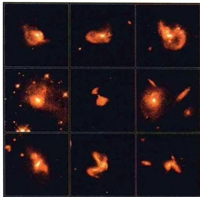
图 6.44b 哈勃望远镜在红 外波段拍摄到的星系碰撞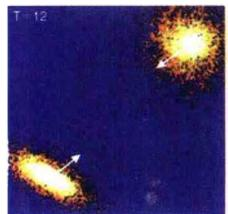
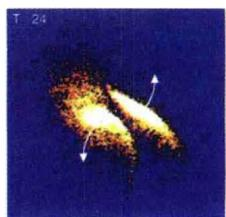
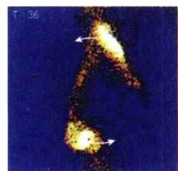
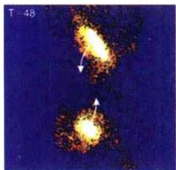
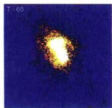
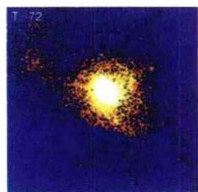
图 6.45 两个旋涡星系并合成一个椭圆星系的计算机数值模拟结果, 整个过程经历约 18 亿年。图上标注的时间单位是 1 T = 2500 万年要补充说明的是，星系的碰撞，并不意味着恒星与恒星之间发生刚体那样的碰撞。恒星之间发生直接碰撞的几率极低，完全可以忽略。但星系碰撞的过程会使恒星的运动速度慢下来，这就是星系动力学中的所谓动力学阻尼，这里我们就不进一步讨论了。重要的是，双方都携带有大量星际气体，在星系碰撞的过程中，这些气体碰到一起，将触发大量的新恒星形成和强烈的星暴。这对于解释星暴星系的产生，以及前面提到过的星系团内的重元素气体的大量存在，是非常有意义的。